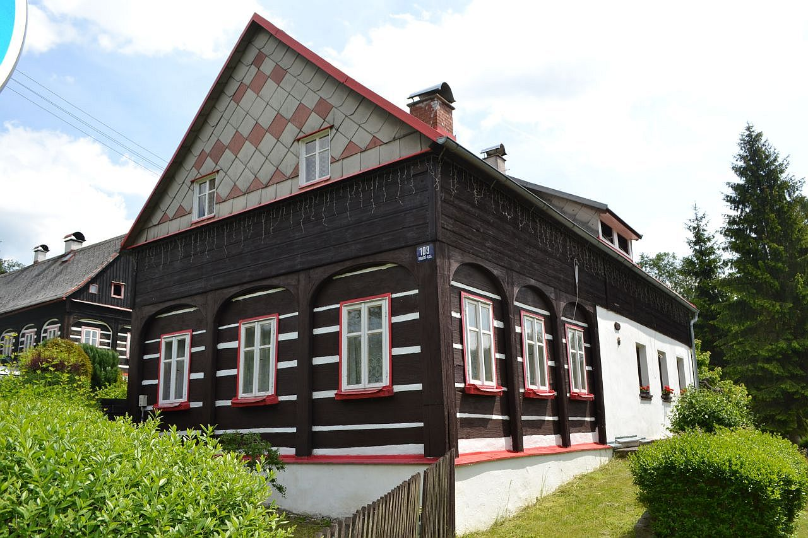
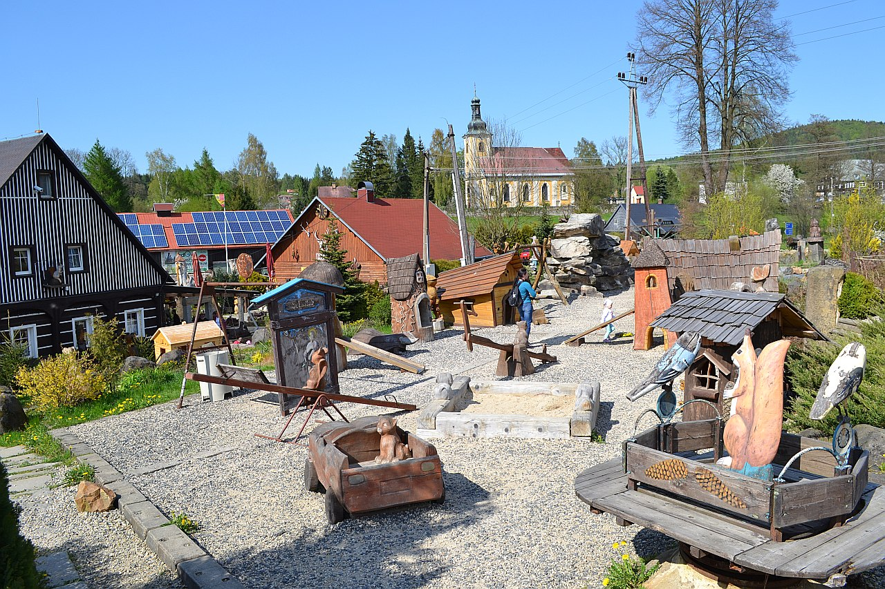
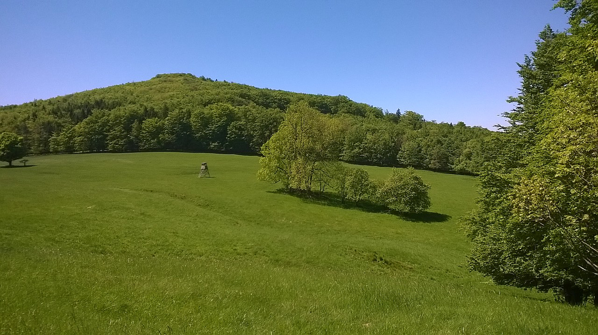
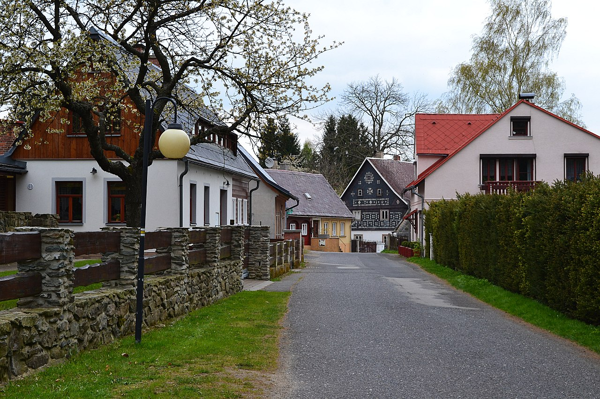
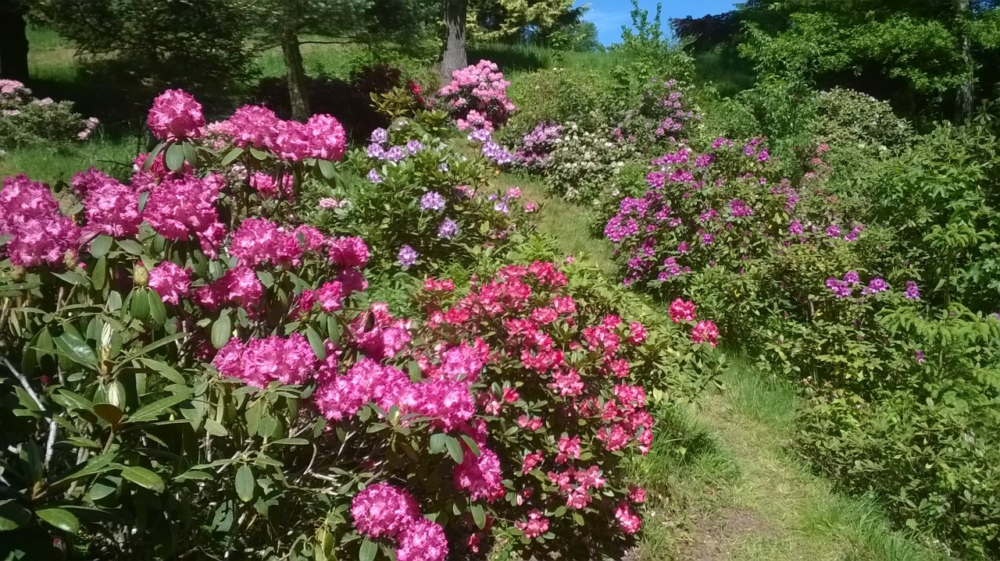
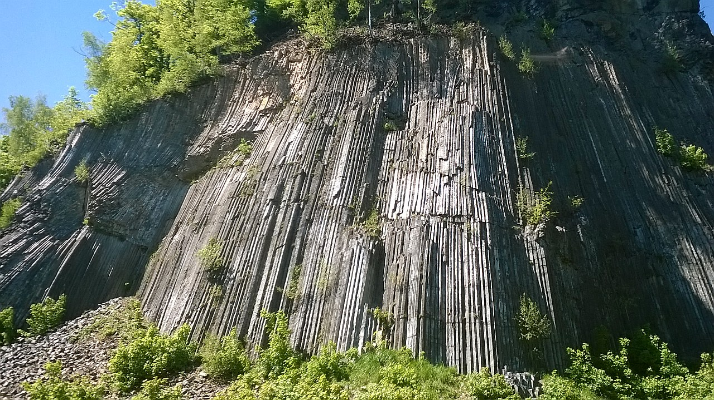
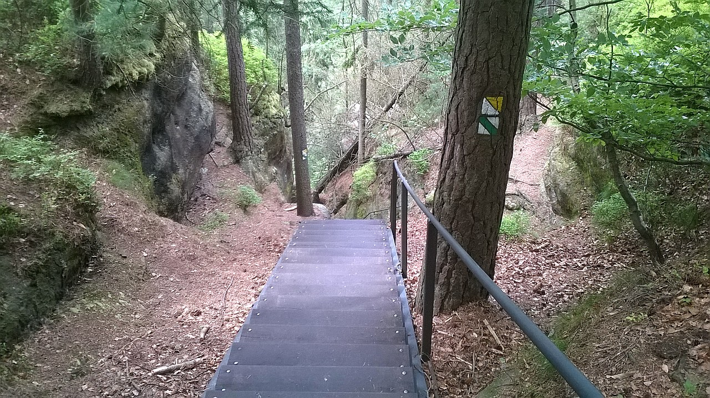
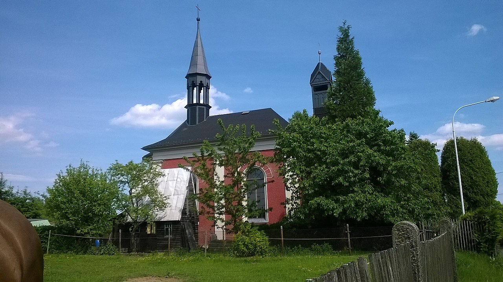

Poklidná dovolená v Lužických horách & Českém Švýcarsku
Ubytování pro 4 osoby s možností přistýlky. Plně vybavená kuchyň, útulný obývací pokoj a zahrada – ideální zázemí pro výlety do skalních měst, na Jedlovou či do Kyjova.
Přízemí: společenská místnost/obývák, kuchyň, ložnice, chodba, koupelna a samostatné WC
Terasa: venkovní posezení
Vybavení
Plně vybavená kuchyň (vaření, nádobí atd.).
WIFI, zahrada a venkovní posezení u ohniště.
Parkování u objektu.
Kapacita a poloha
Kapacita: 4 osoby + přistýlka.
Poloha: Nová Chřibská (část Rybniště) na úpatí hory Plešivec.
Oblast: Lužické hory / České Švýcarsko.

Ceník
Typ pobytu
Období
Základní cena
týdenní pronájem 7 nocí (sobota–sobota)
červenec a srpen
základní cena 10 000 Kč + spotřeba elektřiny + rekreační poplatek obci
čtrnáctidenní pronájem 14 nocí (sobota–sobota)
červenec a srpen
základní cena 18 000 Kč + spotřeba elektřiny + rekreační poplatek obci
týdenní pronájem 7 nocí (sobota–sobota)
mimo hlavní prázdniny
základní cena 7 000 Kč + spotřeba elektřiny + rekreační poplatek obci
víkendový pronájem
pátek odpoledne – neděle
základní cena 3 500 Kč + spotřeba elektřiny + rekreační poplatek obci
sleva 5% ze základní ceny pro rok — pro druhý pronájem
sleva 10% ze základní ceny pro rok — pro třetí a další pronájem
Platební a storno podmínky
Při uzavření rezervace je nutné uhradit 50% z ceny pronájmu jako nevratnou zálohu.
Před nástupem se doplácí zbytek platby a při nástupu se hradí vratná kauce 2 000 Kč.
Podrobnější informace o pronájmu a storno poplatcích budou uvedeny v zaslané smlouvě.
Veškeré platby probíhají přes účet.
Jiné možnosti pronájmu jsou možné po vzájemné domluvě.
Obsazené termíny
Prázdniny 2026: 18.7.-8.8.
Další termíny dle aktuální domluvy.
Základní informace (podrobně)
Chalupa se nachází v rekreační oblasti na úpatí hory Plešivec. Jedná se o podstávkovou chalupu po částečné rekonstrukci. Nabízí ubytování pro 4 osoby s možností další přistýlky v hlavním pokoji.
Vybavení kuchyně: veškeré kuchyňské vybavení, jídelní kout, mikrovlnka, lednice s mrazicím boxem, rychlovarná konvice, překapávač na kávu a elektrický sporák.
Obývací část: sedací souprava a televize.
Ložnice: čtyři lůžka (jedna palanda).
Sanitární zázemí: samostatné WC a koupelna se sprchovým koutem.
Voda: z vlastního zdroje — vhodná pro vaření, k přímé konzumaci doporučujeme vodu balenou (v testech vyšla jako pitná).
Exteriér: zahradní nábytek, houpačka a gril, pozemek je oplocen.
Parkování: na vlastním pozemku před oplocenou částí až pro dvě auta.
Další: vnitřní prostory jsou nekuřácké, k dispozici je Wi-Fi.
Jednoduchá procházka z chalupy do Doubice. Louky, rybníček a dětské hřiště u Staré hospody. ~1 h 15 min se zastávkami.

Cílem cesty se stala Stará Hospoda v Doubici, kde se mohou vyřádit naše pořád energií nabité děti. Od chalupy jsme se vydali dolů pár metrů po silnici směrem k odbočce (1). Zde jsme sešli na málo frekventovanou silnici mezi starými domky, chatkami a pensionem Braun. Kousek za pensionem mezi domky silnice odbočuje vlevo (2). Prošli jsme kolem malého rybníčka na pravé straně a pomalu přišli k dřevěnému rozcestníku, kde jedna šipka ukazuje někam na Doubici (3). Přesně podle šipky jsme se vydaly do štěrkové cestě do kopce směřující k oplocené chaloupce a zde také cesta končí (4). Vydali jsme se kolem plotu (5) a došli na louku nad zahradou. Zde jsme po vyšlapané cestičce přišli na pomalu se objevující začátek cesty (6), která vede až na silnici. Okolo bodu (7) jsme sešli z cesty směrem vlevo nahoru po vyšlapané cestě a prošli jsme mezi chalupami až na silnici (8). Pokud nesejdete, cesta se za nedlouho napojí na silnici také. Pak už jen krásným lesem po silnici až do Doubice. Cestu jsme si ještě zkrátili přes louku na turistické odbočce ke kapličce v poli (9) a už jsme byli u cíle. Děti si spokojeně hrály v parku a my popíjeli kafíčko. Celá cesta se zastávkami trvala přibližně 1 h 15 min.
Okružní trasa v okolí chalupy přes Malý Semerink a vyhlídky. Přibližně 10 km, ideální pro rodiny i středně zdatné turisty.

Okružní trasa začíná u chalupy a vede po silnici ke Chřibské. Za prvním domem odbočka vlevo (1), kolem domků a dolů ke koupališti (2). Pěšina za koupalištěm se napojuje na asfalt (3), dále přes žlutou značku mezi loukami (4). Stoupání vede k historickému střeleckému terči (5) a pak po vrstevnici k vyhlídce s lavičkou (7). Cesta se napojí zpět na žlutou (8), pokračuje na Malý Semerink (9) s možností občerstvení a vede přes silnici směrem na Rybniště (10). Poté lesními cestami k chalupě (11–15). Celkem cca 10 km.
Okruh z Jiřetína přes Křížovou horu a Jedlovou, krásné výhledy a možnost občerstvení. ~10 km.

Startujeme na náměstí v Jiřetíně (1). Po zelené nahoru na Křížovou horu (2) s výhledy. Pokračujeme po loukách k lesu (3) a po prudké sjezdovce (4) na Jedlovou. Cesta se stáčí kolem Jedlové a napojí se na asfalt (5). Sestupujeme z mírného kopce až k Ranči (6). Místo návratu po zelené pokračujeme po červené směrem pod Tolštejn, napojíme se na silnici (8) a jdeme zpět do Jiřetína (9–10). Výhledy, zmrzlina, cca 10 km.
Jarní procházka arboretem a zahradami se spoustou rododendronů. Krátká, voňavá trasa vhodná pro focení.

Provoněný jarní výlet směřuje do nedaleké Sněžné, kde v květnu a začátkem června kvete nespočet rododendronů. Parkujeme u kapličky (1–2) a projdeme vstupem do arboreta. Krátká trasa, ideální pro rodiny a fotografy.
Výlet k vzácné měsíčnici a k monumentálním čedičovým varhanám—výborné v květnu. ~8 km.

Začínáme na Křížovém Buku (1). Přes asfaltovou lesní cestu dorazíme k oplocené rezervaci s měsíčnicí (2). Po prohlídce pokračujeme přes rozcestí Trajek (4), poté prudce po modré do kopce a po otevření lesa se naskytnou krásné výhledy (5). Pokračujeme na červenou, projdeme obcí Líska po červené až k odbočce na Zlatý vrch a čedičové varhany (7–8). Návrat po stejné trase.
Krátká, strmější trasa s mnoha vyhlídkami a zajímavými skalními útvary. Ideální na odpolední výlet.

Z parkoviště v Kyjově (1) stoupáme po silnici a Koglerově stezce mezi domky (2). Trasa vede přes vyhlídky až ke Kyjovskému hradu a poté sestupem do údolí (3) k zajímavé Klenotnici (4). Následuje návrat podél Křinice zpět do Kyjova (5–6). Krátký, atraktivní okruh.
Kombinace chaloupek, lesních stezek a delšího klesání do Kyjova. Přibližně 8 km / 2 hodiny.

Start u Restaurace ve Vlčí Hoře (1). Po žluté a Koglerově stezce (2) mezi chaloupkami, dále lesem (3–4) k Malému Vlčímu potoku. Následuje výstup k pramínku (5) a pokračování po neznačené cestě na asfaltku (6). Dlouhé klesání do Kyjova (7) a návrat přes chaloupky a kozí farmu zpět na hlavní (8). Trasa cca 2 hodiny, 8 km.